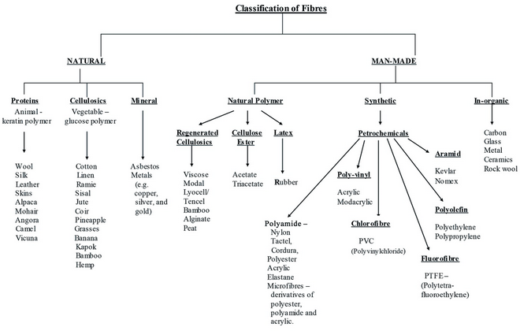

Classification of Textile Fibres
Definition of Textile Fibre:
A textile fibre is a strand of material that is used to make textiles. Textile fibres are the basic raw materials used to produce textiles. They are long, thin strands that can be spun or extruded into yarns or threads and then woven, knitted, or pressed into fabrics. Textile fibres can be natural or synthetic, and each type of fibre has unique properties that determine its suitability for different types of textiles. In this article I will discuss classification of textile fibres.
Classification of Textile Fibres:
Textile fibres classification means to the categorization of fibres based on their origin, chemical composition, and physical properties. The classification of textile fibres can be done in a number of ways.
Textile fibres can be classified into two main categories: natural fibres and synthetic fibres.
Natural fibres:
Natural fibres are fibres that are obtained from plants, animals, and minerals. Examples of natural fibres include cotton, wool, silk, flax, hemp, jute, and ramie. These fibres are used to make a wide range of products, including textiles, paper, and building materials. They are also used in the production of bioplastics and biocomposites. Natural fibres are renewable, biodegradable and are considered as an eco-friendly alternative to synthetic fibres.
Natural fibres can be classified into several categories based on their origin and properties. Some common classifications of natural fibers include:
-
Plant fibres: These fibres are obtained from plants, such as cotton, linen, hemp, and jute.
-
Animal fibres: These fibres are obtained from animals, such as wool, silk, cashmere, and alpaca.
-
Cellulosic fibres: These fibres are derived from plant cell walls, such as cotton, linen, and hemp.
-
Protein fibres: These fibres are derived from animal hair or secretions, such as wool, silk, and cashmere.
-
Bast fibres: These fibres are obtained from the stem of certain plants, such as flax, hemp, and jute.
-
Leaf fibres: These fibres are obtained from leaves of certain plants, such as sisal and abaca.
-
Seed fibres: These fibres are obtained from seeds, such as cotton and kapok.
Some fibres may fit into more than one classification. For example, cotton is a plant fibre and a cellulosic fibre.
Man-made fibres:
Man-made fibers, also known as synthetic fibres are fibres that are artificially created from chemical compounds. These fibres are not naturally occurring and are typically manufactured from petroleum-based products. Examples of synthetic fibres include polyester, nylon, acrylic, and spandex. These fibres are often used to make a wide range of products, including clothing, upholstery, and industrial materials. Synthetic fibres are known for their durability, strength, and resistance to shrinking and wrinkling, which makes them popular for use in clothing and other textiles. They are also less expensive to produce than natural fibres, which makes them more cost-effective for many applications. However, they are not biodegradable and also require a significant amount of energy to produce which makes them environmentally unfriendly.
Synthetic fibres can be classified based on their chemical composition and manufacturing process. Some common classifications include:
-
Polymer fibres: These fibres are created by polymerization of synthetic monomers, such as polyester, nylon, and acrylic.
-
Glass fibres: These fibres are made from glass and are known for their high strength and low thermal expansion.
-
Carbon fibres: These fibres are made from carbon and are known for their high strength, low weight and thermal stability.
-
Metal fibres: These fibres are made from metal, such as stainless steel and are known for their high strength and thermal stability.
-
Aromatic polyamide fibres: These fibres are made from aromatic polyamides and are known for their high strength, thermal stability, and chemical resistance.
-
Viscose rayon fibres: These fibres are made from cellulose and are known for their softness, drapability and ability to absorb moisture.
-
Modal fibres: These fibres are made from beech tree pulp and are known for their softness, drapability and moisture-wicking properties.
References:
-
Principles of Spinning: Fibres and Blow Room Cotton Processing in Spinning by Ashok R. Khare
-
Textile Engineering – An Introduction Edited by Yasir Nawab
-
Fibres to Fabrics by Bev Ashford
-
Textile Engineering By Roxanna Cody
-
Textile Chemistry By Thomas Bechtold and Tung Pham
-
Textile Technology: An Introduction, Second Edition by Thomas Gries, Dieter Veit, and Burkhard Wulfhorst
YOU MAY ALSO LIKE :